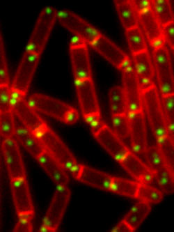

The figure shows a field of sporulating cells the outlines of which are stained red with a membrane strain. Red lines across the short axis of the cells are division septa. In cells that have undergone asymmetric division the division septa are near the pole. The green dots are replication origin-containing segments of the chromosome, which are fastened to the cell poles.
Dividing cells face the challenge of ensuring that newly duplicated chromosomes are faithfully segregated to their daughters. This challenge is particularly acute in the bacterium
Bacillus subtilis in which a specialized process of asymmetric cell division results in the formation of a dormant cell called the spore. Efficient segregation of a chromosome into the unusually small space of the developing spore requires a protein called RacA that anchors the chromosome to the cell pole before division takes place. RacA is believed to bind to a centromere-like element in the portion of the chromosome containing the origin of replication, but the nature of this centromere has been mysterious. The structure of the centromere has now been elucidated in a collaboration between computational biologists
Jun Liu of the Department of Statistics and
Shirley Liu of the School of Public Health and molecular biologists in the laboratory of
Richard Losick. Workers in the Losick lab showed that RacA binds to twenty-five distinct regions spread out over 612 kilobases across the origin-containing portion of the chromosome. Liu and Liu then used a recently developed algorithm called "Motif Regressor" to deduce the specific sequences in the chromosome at which RacA binds, a prediction that was verified biochemically and molecularly in the Losick lab. A further collaboration with physicist
John Marko at the University of Illinois at Chicago, who carried out experiments with single molecules of DNA, indicated that RacA causes DNA to condense dramatically into highly stable DNA-protein complexes. The team of collaborators hypothesize that RacA causes a very large region of the chromosome to fold up into a single, higher-order complex that is responsible for fastening the chromosome to the cell pole.
Read article in Molecular Cell